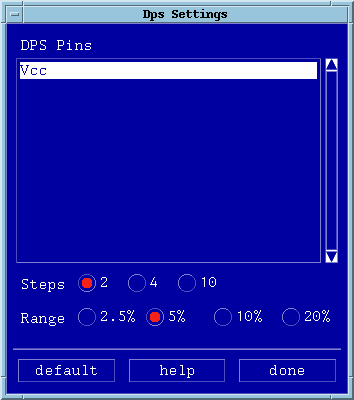

DPS Select Dps in the Settings pulldown menu. A screen similar to that of the figure below appears.  Set up your margin settings as appropriate, and click done when finished.See Selecting Pins/Groups/Ports.